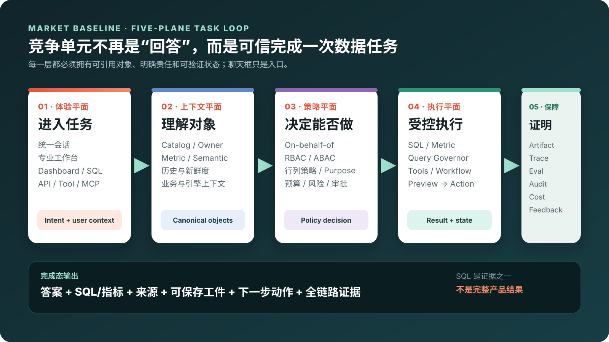

[工作区实测]
Databricks：对象连续性是体验基础
同一治理数据可以进入 SQL、视图、Genie、多轮问答与后续应用；我们已用合成数据和工作区录屏验证其中的可用路径。
看 Genie 实现与多种入口 →数据智能 · 数据库 · Agent 产品决策
用 Databricks 真实工作区演示建立产品直觉，用 11 家厂商官方资料识别市场基线，再用 G1–G6 验证华为云到底应由 DataArts 迭代、数据库新建，还是共建一条客户旅程。
EXECUTIVE ANSWER
独立调研推翻了“数据库团队照着 Databricks 补五个服务、90 天交付”的过早收敛。真正的分水岭是跨产品对象、身份、策略、任务与证据能否连续。
同一治理数据可以进入 SQL、视图、Genie、多轮问答与后续应用；我们已用合成数据和工作区录屏验证其中的可用路径。
看 Genie 实现与多种入口 →11 家厂商、67 项能力显示，入口正在从问答框走向“会话 + 专业工作台 + 外部 Tool”，竞争覆盖体验、上下文、策略、执行、保障五个平面。
进入 67 项能力全集 →DataArts 管数据与语义，RDS/DAS 管数据库执行，AgentArts 管任务编排，共享身份、策略、工件和 Trace；最终归属必须由 G1–G6 决定。
先看华为差距与方案摘要 →MARKET BASELINE
自然语言和 NL2SQL 只是体验与执行之间的一段。答案必须落到受治理执行与可复算工件；SQL 是证据，不是完整结果。

会话、工作台、Dashboard、SQL、API 与 Tool 都能进入同一任务。
资产、Owner、指标、语义、历史、新鲜度和引擎事实可被稳定引用。
最终用户身份、用途、行列权限、预算和动作风险在执行端生效。
SQL、指标、工具和 Workflow 有状态、可取消、可预演、可恢复。
Artifact、Trace、Eval、Audit、Cost 和反馈证明结果可信且可运营。
COMPETITIVE EVIDENCE
评分用于暴露强弱项和验证优先级，不应当作权威排行、产品采购分数或账号实测结果。
Databricks、Snowflake 等公开产品旅程的强项，不只是问答准确，而是语义对象、分析工件、外部入口与评测相互引用。
对话入口逐渐连接 BI、数据工程、数据库运维、治理与应用开发，而专业工作台仍保留深度操作。
DataArts、AgentArts、RDS、DAS 等已有多个能力面；公开资料尚不能证明统一对象模型和端到端状态连续。
HUAWEI GAP
公开资料能证明产品存在，不能证明它们在同一租户和同一任务里共享对象、权限、状态与证据；这些接缝必须实测。
资产、指标、会话、任务、工件和动作是否有跨产品稳定 ID、版本与深链。
浏览器用户能否 on-behalf-of 穿透 Agent 与数据服务，并在数据库执行端强制权限。
DataArts 中的指标、Join 与治理策略能否被 DAS/RDS 和外部 Agent 直接复用。
内嵌入口和外部 Agent 是否共用权威 API/Tool，而非各自复制 Prompt 和权限逻辑。
一次任务能否贯通 Query ID、SQL、来源、新鲜度、策略、Artifact、Eval、Audit 与 Cost。
“DataArts 已经覆盖，所以数据库只接一个 Connector”——公开资料不足以证明。
“数据库部门应重做完整数据智能平台”——现有证据同样不支持。
三个领域权威加共享控制面，以一条业务旅程验证组织和产品边界。
HUAWEI PLAN · 待验证方案
当前优先验证“双平面联合产品”：前台允许从 DataArts、DAS/RDS 或企业门户进入；后台由统一对象、最终用户身份、策略、任务状态、工件和 Trace 保证连续。PostgreSQL 先承担首个数据库执行验证，多引擎在 Gate 之后扩展。
PRODUCT OWNERSHIP
选项不是四套重复建设。G1–G6 的证据将决定统一入口和共享控制面由谁拥有、哪些能力留在领域产品、商业包装如何形成。
RDS/DAS 拥有入口、语义、Agent 和运营闭环。
DataArts 统一入口与智能分析，数据库提供 Connector 和诊断工具。
DataArts 管数据语义，RDS/DAS 管执行，AgentArts 管编排，共享控制面串联。
不建新总入口，以标准 API/Tool、身份、工件和评测包嵌入各产品。
DECISION GATES
当前 Gate 是决策验证，不是伪装成“阶段”的固定开发路线。无法实测的能力保持 Unknown，不能用产品文档或原型图自动判定通过。
跨 DataArts、AgentArts、RDS/DAS 的稳定 ID、版本、引用和深链。
输出：对象映射 + 一条实测链最终用户 OBO、服务身份、策略决策和数据库执行端强制。
输出：正向/越权用例 + 审计指标、Join、时间、状态口径复用，并对 Golden Questions 严格比对。
输出：评测集 + 结果真值内嵌和外部入口共用 Tool/API；异步、幂等、预演、审批和验证。
输出：能力合同 + 动作证据任务、SQL、策略、Artifact、Eval、Audit、Cost 和失败恢复共享 Trace。
输出：端到端 Trace + 故障演练客户是否为完整工作流付费，归属、RACI、SLA 和成本是否可承接。
输出：设计伙伴证据 + 决策稿确定产品归属、P0 模块、目标架构、OKR 与分阶段路线。
缩为数据库能力包或 DataArts 插件，保留已验证的领域权威。
停止大平台建设，只做高价值专业工作台与标准工具接口。
BUSINESS STORIES
每个故事都必须展示：谁发起、用了哪些对象、策略在哪里执行、产出什么工件、业务如何继续、什么动作必须审批。
区域负责人追问渠道、品类和时间窗口，系统复用权威指标与 Join，保存分析工件并发布到看板。
联查订单、退款、客户、工单与政策，生成受影响客户清单、证据和建议；退款与发信单独审批。
应用 Owner 关联成功率、延迟、慢 SQL、等待、告警、变更和拓扑，形成事故证据包和修复提案。
伙伴应用带最终用户与租户上下文调用 Tool/API，获得同源语义、任务状态和证据，而不是共享高权限连接。
DATABRICKS LIVE PROOF
以下数字来自 2026-08-18 Free Edition 工作区和本项目合成数据；不外推为商业版功能、容量、SLA、成本或 API 权益。
已验证链路：合成数据 → Delta/Unity Catalog → SQL Warehouse/视图 → Genie Sources/Instructions → 自然语言问题 → SQL/结果/多轮追问。架构演示和华为方案录屏另行标识，不冒充工作区实测。
DEMO PLAYLIST
默认播放普通话有声版。Genie 提供三段较长的分层录屏；外部视频用于补充厂商定位，不证明本账号已经开通对应能力。
从问题、解释、SQL、图表到继续追问，适合作为领导演示主片。
解释 Genie 如何从聊天体验变成可配置、可评测、可运营的产品。
比较身份、上下文、异步状态、工具调用与责任边界；不冒充 API 生产实调。
订单、退款与工单证据如何形成建议，以及写动作为什么要单独审批。
把引擎事实与业务影响连接起来，重点展示证据包而不自动修库。
保留用于解释研究演进；其中双引擎、五项服务和固定 90 天路线已不再是当前结论。
EVIDENCE BOUNDARY